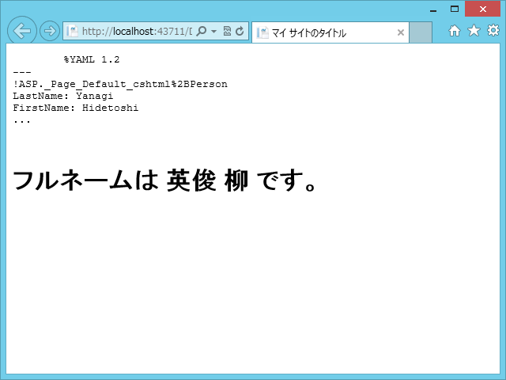

WebMatrix/ASP.NET Web Pages で YAML を扱う
公開日：
ちょっと YAML を使いたいなーというシーンがあったので、いろいろ調べたみた。
YAML って？
YAML は XML よりも読みやすく、書きやすく、JSON よりも型にうるさく、しかも自由度がある、Ruby 使い達に人気の(?) データ記述形式です。
ほんとう？ それを確かめるためにちょっと比較してみました。例は XMLの論考: YAMLはXMLに改良を加える のものをベースに、XML-JSON相互変換ツール - Bluehawk's lab. で作成した JSON 形式のものを追加してあります。
XML で表現した場合
<?xml version="1.0"?> <club> <players> <player id="kramnik" name="Vladimir Kramnik" rating="2700" status="GM" /> <player id="fritz" name="Deep Fritz" rating="2700" status="Computer" /> <player id="mertz" name="David Mertz" rating="1400" status="Amateur" /> </players> <matches> <match> <Date>2002-10-04</Date> <White refid="fritz" /> <Black refid="kramnik" /> <Result>Draw</Result> </match> <match> <Date>2002-10-06</Date> <White refid="kramnik" /> <Black refid="fritz" /> <Result>White</Result> </match> </matches> </club>
タグがウザい。何でもできるけれど、少し厳格すぎるきらいがある。
JSON で表現した場合
{
"club": {
"players": {
"player": [
{
"-id": "kramnik",
"-name": "Vladimir Kramnik",
"-rating": "2700",
"-status": "GM"
},
{
"-id": "fritz",
"-name": "Deep Fritz",
"-rating": "2700",
"-status": "Computer"
},
{
"-id": "mertz",
"-name": "David Mertz",
"-rating": "1400",
"-status": "Amateur"
}
]
},
"matches": {
"match": [
{
"Date": "2002-10-04",
"White": { "-refid": "fritz" },
"Black": { "-refid": "kramnik" },
"Result": "Draw"
},
{
"Date": "2002-10-06",
"White": { "-refid": "kramnik" },
"Black": { "-refid": "fritz" },
"Result": "White"
}
]
}
}
}ネストが深い。JavaScript との相性が抜群だが、いろいろユルい部分も多い。
YAML で表現した場合
--- players: Vladimir Kramnik: &kramnik rating: 2700 status: GM Deep Fritz: &fritz rating: 2700 status: Computer David Mertz: &mertz rating: 1400 status: Amateur matches: - Date: 2002-10-04 White: *fritz Black: *kramnik Result: Draw - Date: 2002-10-06 White: *kramnik Black: *fritz Result: White
タグがないし、ネストも深くないのでスッキリ。ただ、構造化データを記述する以外の用途には向かない。
あと、参照の仕組み（アンカーとエイリアス、アドレスとポインタのようなもの）をもっているのがいい。これって、データベースをテキストに書きだしたり、オブジェクトをシリアライズするときにも便利だよね。
YamlSerializer for .NET
主に２つの目的で使うことができます。
- C# のオブジェクトをそのまま YAML テキストにシリアライズ・デシリアライズすることができます。=> YamlSerizlizer クラス
- 一般の YAML ファイルを扱うこともできます。 => YamlNode クラス
というわけで、今日はこのライブラリを使ってみる。ちゃんと NuGet にもパッケージングされていて、WebMatrix からもサックリ使えるよ。
サンプルコード
# Default.cshtml@functions { // シリアライズ・デシリアライズのためのサンプルクラス public class Person { public string FirstName { get; set; } public string LastName { get; set; }
public override string ToString() { return string.Format("{0} {1}", FirstName, LastName); } } }
@{ var person = new Person() { FirstName = "Hidetoshi", LastName = "Yanagi", };
// シリアライザの生成 // using System.Yaml.Serialization; var serializer = new YamlSerializer();
// YML形式のテキスト string yml =@" LastName: 柳 FirstName: 英俊 ";
// YMLテキスト → Person var deserialised = serializer.Deserialize( yml, typeof(Person) ); }
<!DOCTYPE html>
<html lang="ja"> <head> <meta charset="utf-8" /> <title>マイ サイトのタイトル</title> </head> <body> <pre> @serializer.Serialize(person) //<– YMLテキストに！ </pre>
// 返り値は object 配列だよ！ <h1>フルネームは @(deserialised[0] as Person) です。</h1> </body> </html>
結果

ちょっとアレだな、とおもったのは @(deserialised[0] as Person) の部分だけれど、dynamic でうければいいのかもしれない。
dynamic deserialised = serializer.Deserialize( yml, typeof(Person) )[0];deserialised.FirstName;